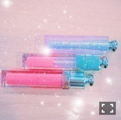

| 2016/08 13 Sat | 斎藤ちはる 仙台初日〜！あと私のリップについて。(´>∀<｀)ゝ |
ちはるーむへようこそ(﹡ˆ ˆ﹡)
今日は真夏の全国ツアー
in仙台！初日でした〜♪
仙台の楽屋は
後ろがいくちゃん！
ピース！
前が愛未！
シャインマスカット食べてる。。笑
斜め前が真洋！
つまみ真洋。
そして隣がずーで！
斜め前がめーちゃんです！
楽しいメンバー(﹡ˆ ˆ﹡)
他愛もない話をしながら
美味しいものを食べながら
みんなでリラックスしてから、
集中力を高めてます！
そして今日のライブは
体感時間がとても短くて
あっという間でした！！！
\( ˆoˆ )/
楽しい時間ってあっという間に過ぎるよね♪
仙台は他の会場に比べて
距離感が近い気がするので、
皆さんの声や反応が
ダイレクトに届いてきます！！
だから盛り上がりが直に伝わって
とても嬉しいし楽しいのです。
みなさんのこともよく見えるよ♡
明日来てくれる皆さん！
沢山反応して、
沢山盛り上がってくれたら嬉しいな♪
お願いします(﹡ˆ ˆ﹡)
皆さんがオススメしてくれた
ポニーテールもしてみたよ( ◦˙ ˙◦ )
真洋も褒めてくれた。。
嬉しかったからまたポニーテールしようっと♪
-------------------------♡
今日はファッションではなくて、
メイクについて(｡･o･｡)ﾉ
私の"唇"を作るものたち。

Diorシリーズ！
おばあちゃんがDior好きなので
私に何か良いことがあると
プレゼントしてくれます(﹡ˆ ˆ﹡)
上から
①Dior アディクトリップ グロウ
004 コーラル
②Dior アディクトリップ マキシマイザー
③Dior アディクト グロス
553 プリンセス
①は保湿効果もあり、
リップクリーム代わりになる！
そして程よく色もつくので
普段はこれ一本で十分♪
②は、無色なので
口紅で色を付けたその上に塗るもの。
塗るとピリピリしてきて
唇がぷっくりするのです！！
メンバーも結構愛用してます〜
③はキラキラのグロス。
青みピンクなので付けるだけで
今風な顔になれちゃいます！
①と③を塗るとこんな感じ！
分かるかな？？
(分かりやすいように
唇だけの写真にしようとしたけど
恥ずかしかった。。)
リップがお気に入りだと
一気に頑張ろうってなれる。
それも愛未がルージュが大好きだから
その影響もあるのかもしれない！
そんな愛未がくれたリップもあるので
また紹介します(﹡ˆ ˆ﹡)
女の子達、是非参考にしてみてね♡
そして私は個人的に
女の子が口紅を塗る仕草が好き！
とても可愛いしセクシー♡
塗ってる子がいるとついつい目が行く。
同じこと思う方いるかな〜(｡･o･｡)ﾉ？？
-------------------------♡
♬ ChihaMusic
「LIFE」ナオト・インティライミさん
頑張ろうって思える！
何度でも僕ら生まれ変われるのさ。
っていうところに
勇気や元気貰える。
たった一度きりの人生を
後悔なきように好きなように生きればいいんだ！
って改めて考えさせられる。
そして高校の先生の同級生が
ナオト・インティライミさんということで
何故か勝手に親近感を覚えています。
明日も頑張ります！！
皆さんお盆休み楽しみましょう\( ˆoˆ )/
そしてゆっくり休みましょう\( ˆoˆ )/
おやすみ。
斎藤ちはる